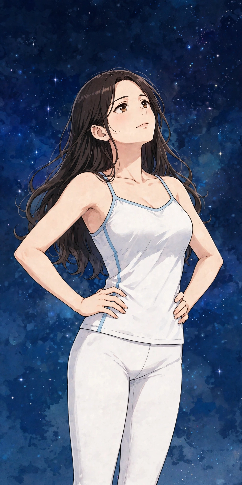

三ノ宮で年度替わりの忙しさに気になる腰の重さ｜要因の整理とセルフケア、受診の目安セルフケア

3月の三ノ宮は、年度替わりの時期です。年度末の締め切りに追われ、新年度の準備が始まり、職場の人の入れ替わりや引っ越しの手続きなど、普段とは違う用事が重なります。そんな日が続くと、腰が重く感じることはありませんか。腰の重さとは、腰が重く感じる、立ち上がるときに腰が張る感じがする、座っていると腰がだるく感じる、といった感じ方を指す言葉として使われることが多いです。年度替わりの忙しさは、座りっぱなしの時間の長さや荷物の整理、睡眠リズムの乱れが重なり、腰の重さを感じやすい時期になると言われています。年度替わりは、職場の人の入れ替わりや新しい役割の引き継ぎも重なり、気持ちの面でも慌ただしくなりやすい時期です。このコラムでは、年度替わりの忙しさに腰の重さが気になるときの要因の整理、忙しい時期の過ごし方とセルフケア、受診を考える目安についてお伝えします。
腰の重さとは、どんな状態か
腰の重さは、腰が重く感じる、立ち上がるときに腰が張る感じがする、座っていると腰がだるく感じる、腰を伸ばすと引っかかる感じがする、といった感じ方を指す言葉として使われることが多いです。腰の重さの一般的なとらえ方は、コラム「三ノ宮で年末の大掃除の後に気になる腰の重さ｜要因の整理とセルフケア、受診の目安」でも紹介しています。腰の重さの現れ方は、ひとつの原因だけで説明できるものではありません。座りっぱなしの時間、荷物の持ち方、寒暖差、睡眠の質などが関わっていると言われています。年度替わりは、こうした要素が重なりやすい時期です。腰の重さを感じたら、その日の過ごし方を振り返ってみることが、セルフケアの出発点になります。
年度替わりの忙しさに重なりやすい要因
要因のひとつは、座りっぱなしの時間の長さです。年度末の書類整理や新年度の準備では、デスクに向かう時間がいつもより長くなります。同じ姿勢で座り続ける時間が長くなると、腰の重だるさを感じやすくなると言われています。30分ごとに立ち上がる時間を入れ、腰をゆっくり伸ばす、両腕をゆっくり回す、といった小さな動きを挟むと、腰の重だるさを感じにくくなります。
荷物の整理と運搬も関わります。年度替わりは、書類や荷物の整理、引っ越しの荷造りが増える時期です。重い荷物を持つと、腰への負担が大きくなります。重いものは、台車を使ったり、宅配便で送ったり、小分けにして運んだりする工夫が役立ちます。重いものを持つときは、膝を曲げて腰を落とし、体に近づけて持つ工夫も役立ちます。
予定の詰め込みと睡眠リズムの乱れも見逃せません。締め切りや手続きが重なると、夜遅くまで作業が続く日が増え、朝早く起きる日が増えます。睡眠のリズムがずれると、朝起きたときに腰の重さを感じやすくなると言われています。年度替わりの作業は、夕方までに区切りをつけ、夜は入浴と睡眠を優先する進め方が役立ちます。
寒暖差も関わります。3月の三ノ宮は、暖かい日と寒い日が交互にやって来る時期です。暖かい場所と寒い場所を行き来すると、体の重だるさを感じやすくなると言われています。腰まわりを冷やさない服装を選び、温かい飲み物を飲む工夫も役立ちます。
年度替わりは、引っ越しの手続きや住所の変更、新しい生活用品の買いそろえなど、腰を使う用事が増える時期でもあります。重い段ボールを運ぶ日が続くときは、無理のない回数に分けて運びましょう。
年度替わりの忙しい時期の過ごし方とセルフケア
まず、作業の進め方を見直してみてください。年度替わりの作業を一度に終わらせようとせず、部屋ごと・種類ごとに分けて進めます。その日の作業は、夕方までに区切りをつけ、夜は入浴と睡眠を優先しましょう。やることを書き出して、今日やる分だけに絞ると、気持ちの張りもゆるみやすくなります。
座り方の見直しも、年度替わりの忙しい時期のポイントです。デスクワークの日は、30分ごとに立ち上がる時間を入れましょう。立ち上がって腰をゆっくり伸ばす、両腕をゆっくり回す、といった小さな動きを挟むと、腰の重だるさを感じにくくなります。デスクワーク後の腰の重さについては、コラム「三ノ宮でデスクワーク後に気になる腰の重さ｜座りっぱなしの日の整え方とセルフケア、受診の目安」もあわせてご覧ください。
ぬるめのお湯にゆっくりつかる工夫も、年度替わりの忙しい時期のセルフケアのひとつです。作業の日の夜は、シャワーで済ませず、ぬるめのお湯に浸かって腰まで温めましょう。湯船のなかで膝をゆっくり曲げ伸ばしする、腰をゆっくり回す、といった小さな動きを挟むと、さらに体が温まります。入浴後は、体を冷やさないよう、温かい服装で過ごしましょう。
忙しい日が続いた翌日は、無理のない予定にすることも大切です。忙しい日の翌日は、予定を詰め込みすぎず、腰を休ませる時間を入れましょう。翌朝の腰の様子を見ながら、無理のない範囲で過ごしてください。荷物の整理が残っている日は、重いものを一度に運ばず、小分けにして運ぶ進め方もおすすめです。
受診を考える目安
セルフケアを続けても、腰の重さと一緒に気になる変化がある場合は、早めに医療機関を受診してください。足のしびれがある、痛みが強い、腰を動かすと痛みが走る、といった状態がある場合は、自己判断で様子を見るのではなく、整形外科などの医療機関に相談することが大切です。
腰の重さが長く続き、セルフケアを続けても変わらない場合も、医療機関に相談してみてください。受診のときに伝えることも、まとめておくと役立ちます。腰の重さを感じる時間帯（朝起きたとき・座りっぱなしのあと・夕方）、腰の重さの感じ方、続いている期間、年度替わりの作業の様子、睡眠の様子をメモしておくと、医師に伝えやすくなります。気になる変化を書き留めておくと、受診のときに役立ちます。
三ノ宮で、年度替わりの忙しさと向き合うときに
ステラスピカは、神戸市中央区琴ノ緒町2-3-5 ネオダイキョー三宮606号室（JR三ノ宮駅東口 徒歩5分）にある女性専用の完全個室サロンで、開院済みです。料金はオイルマッサージ＋美容整体の90分コース10,000円（税込）のみ、営業時間は月〜土17:00〜22:00（日曜休み）、完全予約制です。施術歴30年の施術者が、施術前にはカウンセリングで当日の体調と気になる部位をうかがい、施術後にはセルフケアのポイントをお伝えします。ご予約はLINE公式アカウントから承っています。年度替わりの忙しさで腰の重さが気になるときは、無理のない日程でご相談ください。
ステラスピカ（三ノ宮） — 女性専用、90分 10,000円、月〜土17:00〜22:00、完全予約制です。